Everything starts with a table. Block 2 reads it from almost any format, checks that it is well formed, proposes a role for each column and works out the structure of the experiment: how many treatments, how many blocks, how many replicates and whether the design is balanced. It is the step that prevents the most errors in the whole analysis.
Block 2 opens with a theory card of six collapsible topics, entitled Before you upload: what a good agricultural experiment needs. It is worth reading before you load your first table, because the app will judge the data by those same criteria.
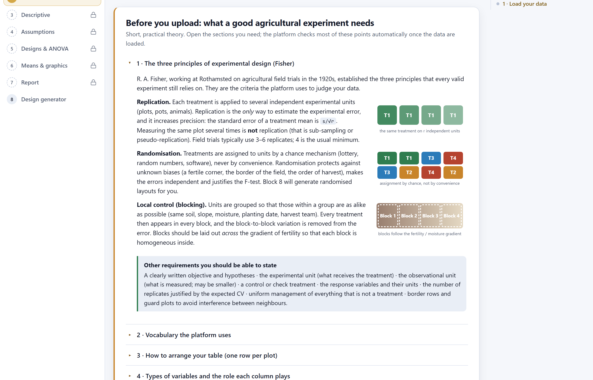
| Topic in the app | What it contains |
|---|---|
| 1 · The three principles of experimental design (Fisher) | Replication, randomisation and local control, with their illustrations, and a list of everything else a protocol must state: objective and hypothesis, experimental and observational unit, control, response variables with their units, number of replicates justified by the expected CV, uniform management and borders. |
| 2 · Vocabulary the platform uses | Treatment, factor, factorial, experimental unit, replicate, block, response variable, covariate, experimental error and CV (table 3.2). |
| 3 · How to arrange your table (one row per plot) | The one-row-per-plot rule, with a correct and an incorrect example side by side, and seven data-entry tips. |
| 4 · Types of variables and the role each column plays | Measurement scales (nominal, ordinal, counts, proportions, continuous, quantitative factor), the usual role of each and its consequences for the analysis. |
| 5 · Which design do I have? (quick guide) | A quick guide from the layout to the design and its model; the same logic as the decision rule in section 2.4. |
| 6 · Accepted file formats | The formats the app reads (section 3.2). |
| In the app | In the Spanish interface | Meaning | Example |
|---|---|---|---|
| Treatment | Tratamiento | A condition whose effect you want to measure. | 0, 60, 120 and 180 kg of N per hectare |
| Factor | Factor | A group of related treatments: its levels. | Factor “Nitrogen” with 4 levels |
| Factorial | Factorial | Two or more factors studied together, in all their combinations. | 3 varieties × 3 rates = 9 treatments |
| Experimental unit (plot) | Unidad experimental (parcela) | The smallest unit that receives a treatment independently. | A 5 × 4 m plot, a pot, a tree |
| Replicate | Repetición | A complete set of all the treatments (in block designs) or one unit per treatment. | Block 1, block 2… |
| Block | Bloque | A group of homogeneous plots that contains all the treatments. | A strip of land along the slope |
| Response variable | Variable de respuesta | What is measured on each unit. | Yield (t/ha), height (cm), severity (1–9) |
| Covariate | Covariable | A numeric variable measured before the treatment acts, used to adjust the response. | Initial plant stand, soil N |
| Experimental error | Error experimental | Variation among identically treated units; the yardstick against which differences between treatments are judged. | The residual mean square |
| CV (%) | Coeficiente de variación | Square root of the error mean square divided by the grand mean, times one hundred: the precision of the trial. | Yield: below 15 to 20% is acceptable |
The app reads tables in long format: the first row holds the column names and each subsequent row is one experimental unit. Factors, blocks, rows and columns go in text or code columns, repeated on every row; responses go in numeric columns. It is the same arrangement used by statistical software and by spreadsheet pivot tables, and it is what a well-kept field book produces (figure 1.3).
Yield_t_ha, Height_cm, Block.4.6, not 4,6 t/ha.NA. A zero is a yield of zero, not a missing value.Control, control and Control (with a trailing space) are three different treatments to a computer.An empty cell and the codes NA, N/A, NaN, null, none, ., -, --, ?, nd, s/d, missing, faltante and spreadsheet errors (#N/A, #DIV/0!, #VALUE!, #REF!) are treated as missing data, regardless of case. Any other text in a numeric column is flagged as “numbers mixed with text”.
The 1 · Load your data card accepts a file in three ways: by dragging it onto the dashed area, by clicking the area to browse for it, or by pasting the contents of the clipboard. Below it are seven examples ready to load.
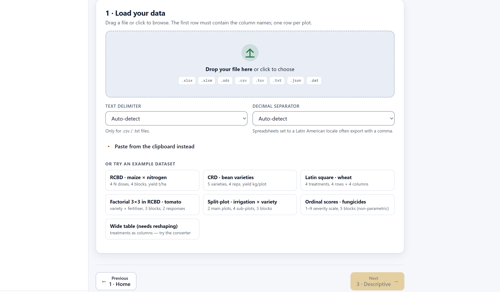
1 2 3 4 5| Format | Extensions | How it is read |
|---|---|---|
| Excel workbooks | .xlsx, .xlsm, .xlsb, .xls | The first sheet is read; if there are several, the Sheet menu lets you switch. Merged cells are detected and reported. Dates are kept as text and are not analysed. |
| Open formats | .ods, .csv, .tsv, .txt, .dat, .prn | Text with any separator: comma, semicolon, tab or vertical bar. Double quotes protect fields that contain the separator. A .tsv file is always read with tabs. |
| JSON | .json | A list of objects (one per plot), a list of lists, an object with columns and data, or an object with one list per column. |
| Clipboard | — | A range copied from Excel arrives separated by tabs; text separated by commas or semicolons is also accepted. It is recorded as pasted-data.txt. |
| Block 8 template | — | The field book generated by Block 8 can be opened directly here, with empty response columns, to check the design before sowing (chapter 9). |
The seven examples are in the data/ folder and the app reads them with a request to the server. If you open index.html by double-clicking it, the browser blocks that request for security reasons and the app warns: Could not load the example. Open the app through server.ps1. With Open AgriDesign.bat or with the online version, the examples load instantly. Your own files are always read, however the app is opened.
Spreadsheets set to Spanish and many other locales use a decimal comma and export 4,65. On automatic, the app counts how many cells look like 4,65 and how many like 4.65 and chooses the separator that predominates; the loading message states which one it used (Decimal separator: comma). If a table mixes both, set the correct separator in the menu and load it again: cells with the other separator will be read as missing and the column will be flagged numbers mixed with text.
On loading, the app examines the grid before interpreting it: it looks for the header row, counts the columns, and detects title rows, merged cells, unnamed columns, repeated names, rows with extra cells, empty rows and total rows. Each finding appears as a notice below the loading message; when there is none, a single green notice says Tidy table.
| Level | Notice | What happened and what the app does |
|---|---|---|
| ⚠ | N title rows above the header | There were rows with one or two cells before the wide header row (a title, a date). They are skipped and the header is taken from the first wide row; check the preview. |
| ⛔ | N merged cell ranges detected | Excel workbooks only. Merged cells leave all but the first cell empty. Unmerge them and fill every row; the app does not guess. |
| ⚠ | N columns without a name | They are named V1, V2… according to their position. Give them a short header. |
| ⚠ | Duplicated column names | The second repeated column receives the suffix _2, the third _3. |
| ⚠ | N rows with more cells than the header | Notes or totals written next to the table. The extra cells are discarded. |
| ℹ | N empty rows removed | Blank rows are ignored. |
| ⛔ | N summary rows (Total / Mean) inside the data | Rows whose first cell reads Total, Mean, Average, Promedio, Suma, Sum or Media. They are removed: the app computes the averages itself, and those rows would otherwise be analysed as plots. |
To see the notices in action, paste this table, exactly as it is, into Paste from the clipboard instead and press Use pasted data. It has a title row, an unnamed column with a margin note, the control written in three ways and a total row.
Ensayo maíz 2026 Block,Treatment,Yield, 1,Control,4.6,nota al margen 1,control,6.2, 2,Control ,3.9, 2,control,5.5, 3,Control,4.3, 3,control,5.9, Total,,30.4,
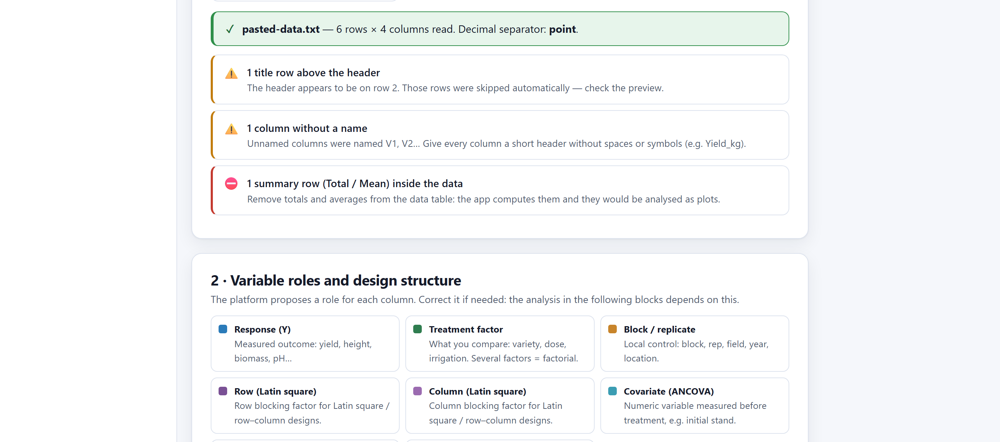
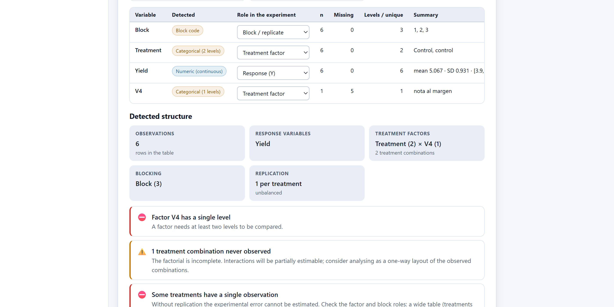
The notices describe what the app did in order to carry on (skip, rename, discard). Your original file never changes. If a notice surprises you, correct the field book in the spreadsheet and load it again: it is the only way for the final report to describe clean data rather than a patch. The Download tidy CSV button of section 3.5 saves the tidy version the app is using, without the excluded columns.
The 2 · Variable roles and design structure card shows one row per column of the table. The app profiles each column, decides whether it is numeric or categorical and proposes a role in the experiment. The menu in the third column lets you correct it; everything that follows in the app depends on that choice.
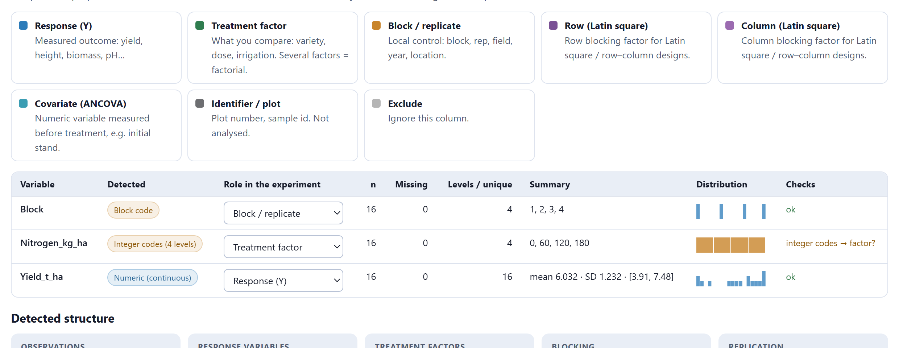
1 2 3 4 5 6| Role | What it is | Consequence for the analysis |
|---|---|---|
| Response (Y) | What was measured: yield, height, biomass, pH, score. Numeric columns only. | Each response is analysed separately in Blocks 3 to 5. |
| Treatment factor | What is being compared: variety, rate, irrigation. Two or more columns with this role form a factorial. | Its levels are the treatments; their combinations, the cells of the factorial. |
| Block / replicate | Local control: block, replicate, lot, year, location. | Enters the model as a block term; decides between complete randomisation and blocks. |
| Row (Latin square) | The row of a Latin square or of a row–column design. | Together with a Column column, it allows the Latin square. |
| Column (Latin square) | The column of a Latin square. | Likewise. |
| Covariate (ANCOVA) | A numeric variable measured before the treatment acts: initial stand, initial weight, soil analysis. | Enters the model as a regressor; the means are adjusted to its average. |
| Identifier / plot | Plot number, sample identifier, position in the field. | Not analysed; kept for the field maps and the report. |
| Exclude | A column of no interest. | Ignored, and left out of the tidy CSV. |
| If the column… | the app proposes… |
|---|---|
| is called Block, Rep, Replicate, Bloque, Repetición or R (in any combination of upper and lower case) | Block / replicate |
| is called Row, Fila, Hilera, Renglón · Col, Column, Columna | Row · Column |
| is called Plot, Parcela, ID, Sample, Muestra, Obs… and all its values are distinct | Identifier / plot |
| is text with up to 40 levels | Treatment factor |
| is text with all its values distinct, or with more than 40 categories | Identifier / plot · Exclude |
| is numeric with a few integer values, each repeated almost the same number of times, and is not named like a measurement | Treatment factor, labelled Integer codes (n levels) |
| is numeric with few values, but with unequal counts or a measurement name (score, yield, height, peso, altura…) | Response (Y), with the flag integer codes → factor? |
| is called Cov, Covariate, Covariable, Initial, Inicial, Stand… | Covariate (ANCOVA) |
| is numeric and has no variation | Exclude, labelled Constant |
| is numeric and none of the previous rules applies | Response (Y) |
These are proposals. A column with codes 1, 2, 3, 4 for the varieties looks numeric: if the app leaves it as a response, change it to a factor. And the other way round: a score from 1 to 9 with even counts may be taken for treatment codes.
| Label | Meaning |
|---|---|
| Numeric (continuous) · Numeric (integers) | At least 90% of the non-empty cells are numbers; whether all are integers or not. |
| Integer codes (n levels) | Integers with few values and even counts: they look like treatment codes. |
| Numeric (n distinct values) | Numbers with few distinct values but unequal counts: possibly a short scale. |
| Numeric (covariate?) | Numeric, with a covariate name. |
| Categorical (n levels) | Text with n levels. |
| Block code · Row code · Column code | Recognised by the column name. |
| Identifier · Field position / plot number | All values distinct, or the name of a position in the field. |
| Constant | No variation. |
| Empty (to be filled in) | A column without values: a field-book template. |
| Flag | What it means and what to do |
|---|---|
| zero variance | All values are equal; the column cannot be analysed. |
| N missing · N% missing | Missing cells; shown in red above 20%. Rows with a missing response are omitted for that variable. |
| numbers mixed with text | Between 50 and 90% of the cells are numbers: some cells contain text, units or the other decimal separator. |
| skewed · strongly skewed | Skewness greater than 1, or than 2, in a response. Block 4 will assess a transformation. |
| N outliers |z|>3 | Values more than three standard deviations from the mean. Check in the field book that they are not data-entry errors. |
| negative values | A response with negative values and none equal to zero; unusual for yields or weights. |
| integer codes → factor? | The column looks like codes; confirm whether it is a factor or a response. |
| levels differ only by case | Two levels differ only in capitalisation: Control and control. Make them the same in the field book. |
| levels with trailing spaces | A level has leading or trailing spaces. Remove them. |
Once the roles are assigned, the app works out the structure of the experiment and summarises it in cards under Detected structure: observations, responses, factors with their levels and number of combinations, blocking, covariates and replication. Below them come a list of checks and, when there is a block or two factors, a table of observations per cell. Every time you change a role, everything is recalculated.
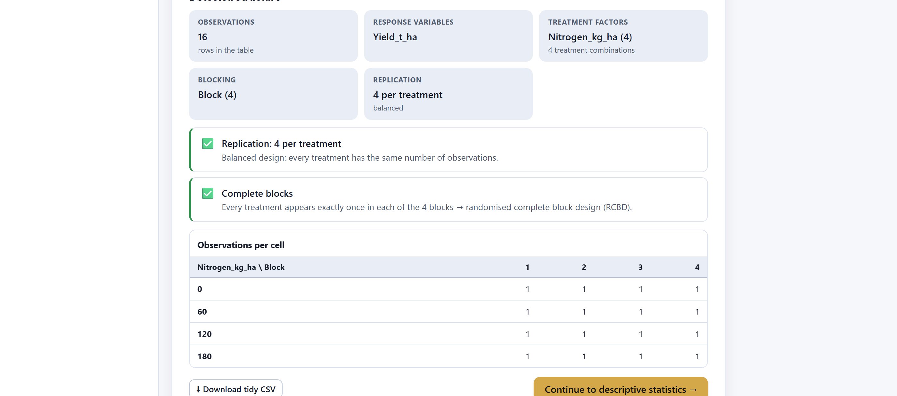
| Level | Check | What it means |
|---|---|---|
| ⛔ | No response variable · No treatment factor | An essential role is missing. Without both you cannot continue. |
| ℹ | This looks like a wide table | Several numeric responses and no factor: the treatments are in the columns. Use the converter (section 3.6). |
| ⛔ | Factor X has a single level | A factor needs at least two levels. |
| ⚠ | Factor X has N levels | More than 30 levels: is it a factor or an identifier? |
| ⚠ | N treatment combinations never observed | The factorial is incomplete: some cells have no data. Interactions are only partly estimable; consider analysing the observed combinations as a single factor. |
| ⛔ | Some treatments have a single observation | Without replication there is no experimental error. It is almost always an unconverted wide table or a wrongly assigned role. |
| ⚠ | Only 2 replicates for some treatments | Two replicates give a very imprecise estimate of the error; three or more are recommended. |
| ✅ | Replication: r per treatment | Balanced if all treatments have the same number of observations; if not, the app warns that it will use type III sums of squares. |
| ✅ | Complete blocks | Each treatment appears exactly once in each block: randomised complete blocks. |
| ✅ | Generalised complete blocks | Each treatment appears more than once per block: generalised blocks, with an estimable block × treatment interaction. |
| ℹ | Incomplete blocks | Not all treatments are in every block: incomplete blocks (lattice, alpha) or missing plots. |
| ⛔ | Blocking column with one level | A single block blocks nothing. |
| ✅ | Latin square structure | Treatments, rows and columns in equal number. |
| ⚠ | Row–column layout is not a Latin square | The three numbers do not match: it will be analysed as a row–column design. |
| ℹ | Y is empty | The response has no values: it is a field-book template. The structure is already valid; fill in the measurements and load it again. |
| ⚠ | Y: N missing values | Missing plots: the design is no longer balanced for that variable. |
| ℹ | Y spans more than one order of magnitude | The maximum is more than 20 times the minimum: a logarithm may be needed. |
| ℹ | Y looks like a short ordinal scale | Integers from 0 to 10 with few distinct values or a score-like name: the non-parametric route of Block 4 is advisable. |
| ℹ | Y looks like a percentage | Values between 0 and 100 with a name suggesting a percentage, incidence, germination or mortality: an arcsine or logit transformation may be needed. |
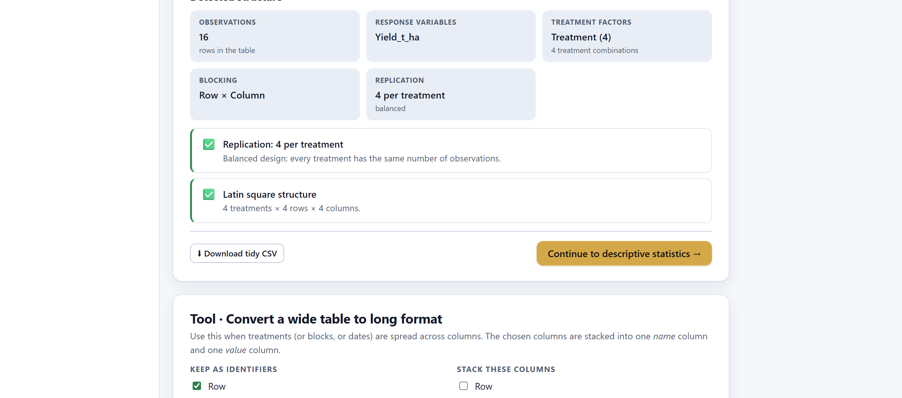
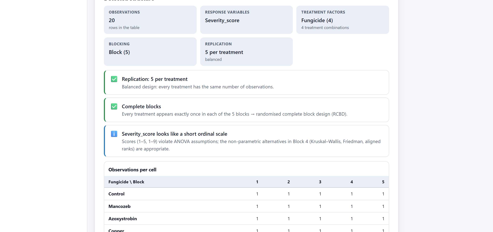
Severity_score looks like a short ordinal scale, with the recommendation to follow the non-parametric route of Block 4.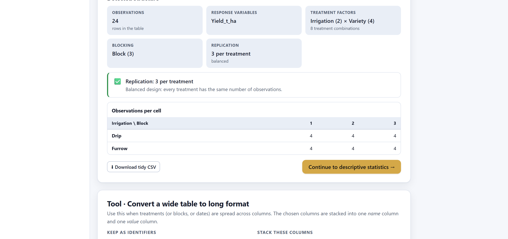
The Continue to descriptive statistics button and Blocks 3, 4, 5 and 7 in the top bar become available when there is at least one response with values, at least one factor and no combination with a single observation. Block 6 becomes available after an analysis has been run in Block 5. While any red check remains on screen, the button stays grey.
Many field books are entered “wide”: one row per block and one column per treatment, or one row per plot and one column per sampling date. The app reads them, but cannot find the factor: all the numeric columns look like responses. The Tool · Convert a wide table to long format card stacks those columns into one column of names and one of values.
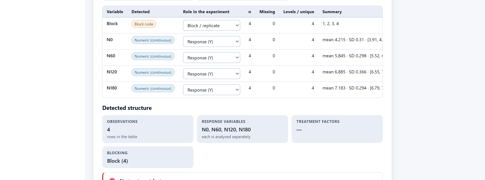
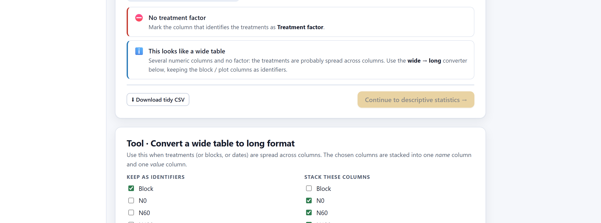
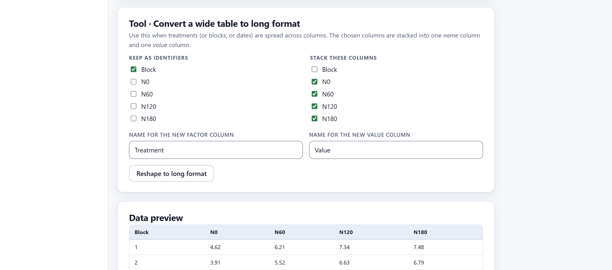
Block.Nitrogen) and that of the value column in Name for the new value column (Yield_t_ha)._long.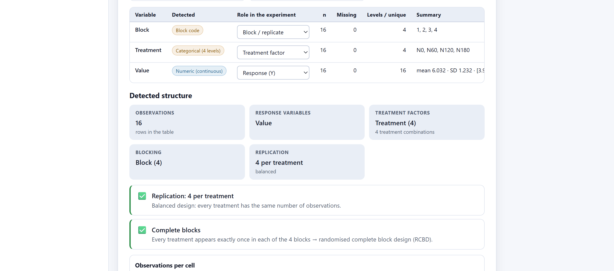
Treatment and Value: 16 rows, the factor column recognised as categorical with 4 levels (N0, N60, N120, N180) and the value column as the response. The structure is the same as that of the original maize and nitrogen example: complete blocks, 4 replicates, balanced.The levels of the new factor are the stacked headers, so N0, N60… are text, not numbers. For the ANOVA and mean comparisons this does not matter. If you want to fit the dose–response curve in Block 5, the levels must be numeric: name the columns of the wide table 0, 60, 120, 180 before loading it, or use the long table with the rate as numbers directly, as in the original example.
The manual’s guiding example, maize and nitrogen in randomised complete blocks, is loaded and checked in under a minute. The following chapters start from here.
Block as block, Nitrogen_kg_ha as factor (integer codes with 4 levels: 0, 60, 120, 180) and Yield_t_ha as response, with mean 6.032, standard deviation 1.232 and range 3.91 to 7.48 t/ha. Nothing needs to be changed.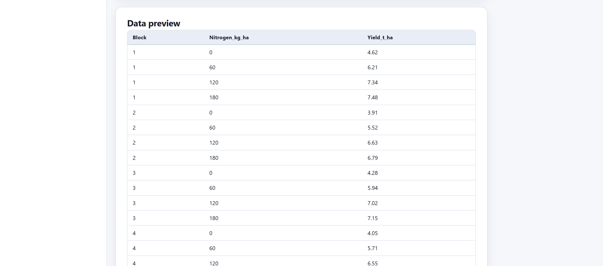
| Example | What the app detects |
|---|---|
| CRD · bean varieties5 varieties, 4 reps, yield kg/plot | 20 plots; Plot as identifier (all values distinct), Variety as a factor with 5 levels, Yield_kg_plot as response; no block: 4 replicates, balanced. |
| Latin square · wheat4 treatments, 4 rows × 4 columns | Row and Column by their names, Treatment with 4 levels; Latin square structure (figure 3.7). |
| Factorial 3×3 in RCBD · tomatovariety × fertiliser, 3 blocks, 2 responses | 27 plants; Variety and Fertilizer as factors (3 × 3 = 9 combinations), 3 blocks, two responses, Yield_kg_plant and Height_cm, which are analysed separately. |
| Split-plot · irrigation × variety2 main plots, 4 sub-plots, 3 blocks | 24 plots; two factors, 3 blocks, 3 replicates (figure 3.9). The split-plot design is declared in Block 5. |
| Ordinal scores · fungicides1–9 severity scale, 5 blocks (non-parametric) | 20 plots, 4 fungicides, 5 blocks and the ordinal-scale notice (figure 3.8). |
| Wide table (needs reshaping)treatments as columns — try the converter | No factor; it has to be converted (section 3.6). |
With the table checked and the roles confirmed, the next step is to look at the data before testing anything. The Block 3 chapter presents descriptive statistics by treatment, block and combination, the coefficient of variation and the exploratory graphics.